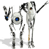
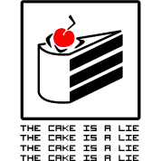

Introdução
Portal 2 é um jogo de ação/puzzle em primeira pessoa desenvolvido e publicado pela Valve Corporation. O título é uma sequência de Portal (2007) e foi lançado no dia 19 de abril de 2011 para Microsoft Windows, OS X, Linux, PlayStation 3 e Xbox 360. Portal 2 originou-se da premiada fórmula de jogabilidade, história e música inovadoras que rendeu ao Portal original mais de 70 prêmios da indústria e criou uma legião cultural. A campanha de Portal 2 introduz uma gama de novas personagens dinâmicas, vários novos elementos de quebra-cabeças e um maior número de desafiadoras câmaras de teste. Os jogadores explorarão áreas nunca vistas antes dos Laboratórios da Aperture Science e reencontrarão GLaDOS, a companheira robótica com certa tendência assassina que os guiou no jogo original.
Personagens
Chell
A protagonista fêmea de toda a série Portal. Tem sempre vestidas as roupas de teste (a blusa de alças branca com o logo da Aperture Science e o fato cor-de-laranja, despido à metade, com as mangas atadas ao redor da cintura), além das "Aperture Science Long Fall Boots" ou "Long Fall Boots" (em português, "Botas de Grande Queda"), e é uma personagem silenciosa, nunca sendo ouvida ao longo do jogo
Glados
É a Inteligência Artificial que, supostamente, guiaria os sujeitos através das câmaras de teste. Tem uma personalidade muito singular, sendo muitas vezes considerada bipolar, devido às mudanças repentinas no seu humor e disposição. É sarcástica e tem tendências assassinas, tentando de diversas vezes matar Chell, mas nunca tem sucesso.
Weathley
Tendo a sua criação tido como objetivo o controlo da personalidade de GLaDOS, este núcleo tem uma personalidade muito singular, ajudando Chell nos primeiros capítulos de Portal 2. Após o capítulo 4 (A Fuga), Weathley torna-se no novo vilão
Cave Johnson
O antigo diretor da Aperture Science, cuja voz é ouvida em gravações por toda a Aperture antiga, após a ascensão de Weathley. Ele e a sua assistente, Caroline, aparecem num dos easter eggs
Enredo
Chell continua sendo a protagonista, logo após os acontecimentos de Portal, no qual ela destrói GLaDOS, após isso Chell é vista caída fora da aperture science e sendo arrastada provavelmente pelo drone que seria designado para dar o bolo à Chell. De acordo com a HQ de portal (Rato de Laboratorio) Chell foi colocada em uma câmara de relaxamento prolongado

Jogabilidade
Em portal 2 você controla Chell em uma perspectiva em primeira pessoa enquanto o objetivo do jogo é passar por uma série de salas de testes utilizando uma arma de portais conhecida como Portal Gun. A Arma de Portais é capaz de criar dois fins distintos de portais, um laranja e um azul. Os portais criam uma conexão visual e física entre dois locais diferentes no espaço tridimensional. Um portal é a entrada e/ou saída do outro portal, e vice-versa; todos os objetos que passam por um portal irão sair pelo outro.
Uma manobra comum é pular em um portal que está no chão e emergir pelo outro pela parede, sobrevoando uma fenda ou outro obstáculo (vide ilustração). Isto permite que o jogador lance objetos ou a própria Chell em grandes distâncias, ambos vertical e horizontalmente

Multiplayer
O modo Cooperativo do jogo adiciona uma campanha alternativa para o jogo focada totalmente em dois novos personagens Atlas e P-body. Essa campanha altera completamente a jogabilidade fazendo que os jogadores ajam e pensem de maneira cooperativa
Comunidade
Mesmo o jogo sendo considerado um pouco "velho" a comunidade do jogo é muito ativa criando vários mods e memes do jogo
Mods
A comunidade modder do jogo é muito ativa fazendo mapas para o game, Os mapa são encontrados na oficina da steam havendo muitos mapas muito criativos. Para criar um mapa é muito simples basta você ir no menu principal e apertar para criar seu mapa, você pode escolher se seu mapa será multiplayer ou singleplayer, quando seu mapa estiver pronto basta você clicar para enviar para a oficina da steam
Há alguns mods para portal 2 na steam que modificam totalmente a jogabilidade do jogo como o Thinking with Time Machine que alem da portal gun você tem uma máquina do tempo, ou outros que mudam totalmente a história do jogo como o mod/jogo Portal Stories: Mel
Memes
Há vários memes da série de jogos sendo eles o companion cube, o space core que é uma das variações do wheatley que apenas fala space com variações da voz do personagem a música do radinho, e o mais famoso o the cake is a lie que foi homenageado em vários jogos sendo um deles o minecraft esse meme se da por conta de uma das frases da GLaDOS no começo do jogo que seria em português "Quando você terminar os testes vamos comer um bolo" mas no final do jogo você descobre que era apenas uma mentira.
Prêmios
Melhor Jogo de PC, Melhor Multiplayer, Melhor Performance Feminina (Ellen McLain como GLaDOS), Melhor Performance Masculina (J.K. Simmons como Cave Johnson), Melhor DLC (Pré Review). Pela Video Game Awards 2011.
Hq
A História em quadrinhos se chama rato de laboratório A HQ mostra Doug Rattmann, um funcionário de laboratório da Aperture Science com um histórico de esquizofrenia, que sobrevive às tentativas de assassinato de GLaDOS. Você pode lê-la abaixo
Músicas
As músicas que tocam no final dos dois jogos são sempre uma super produção, as músicas são sempre a GLaDOS cantando para a protagonista, eles tem sempre um um toque de humor, amor ironico para a protagonista
Easter Eggs
Há varios easter eggs em portal 2 muitos sendo comicos e outros contando a história do jogo, Você pode ver todos os ester eggs abaixo:
Obrigado por ler :D